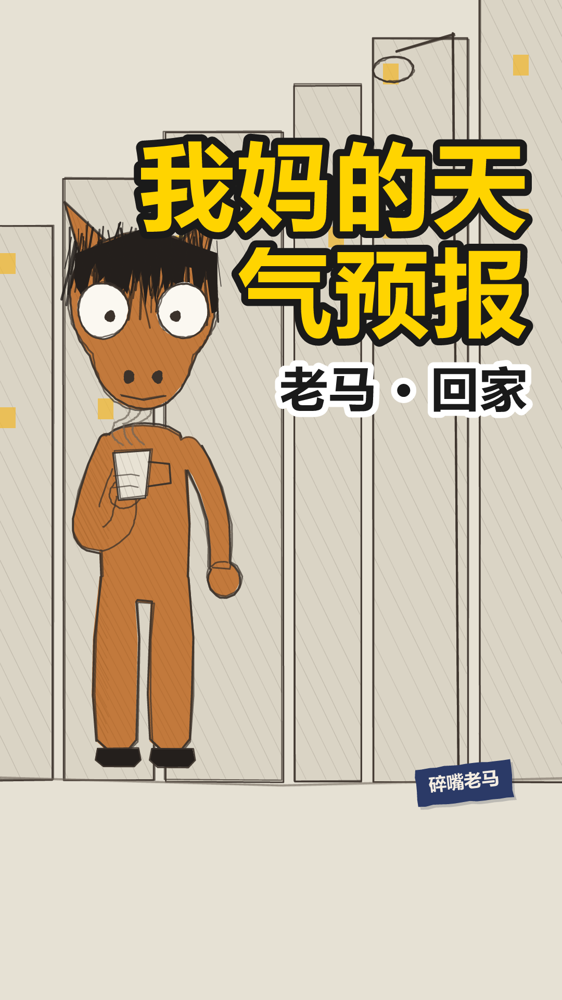
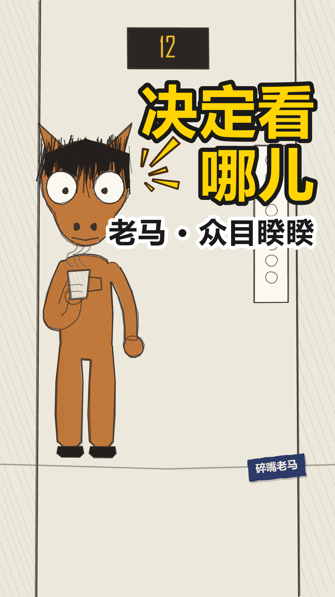
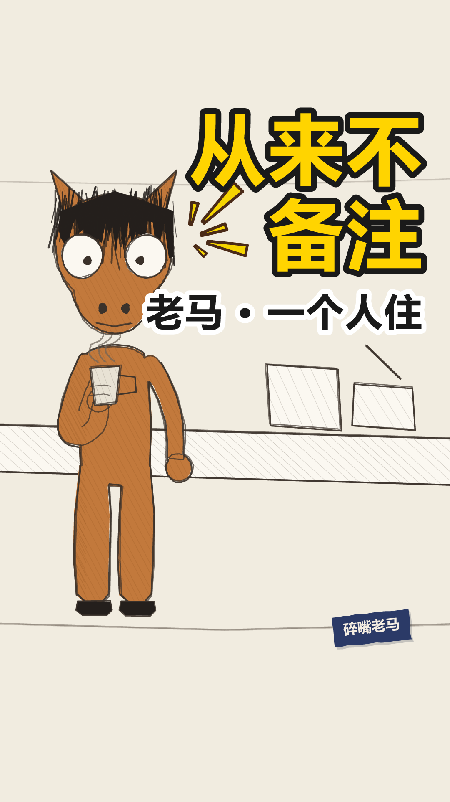
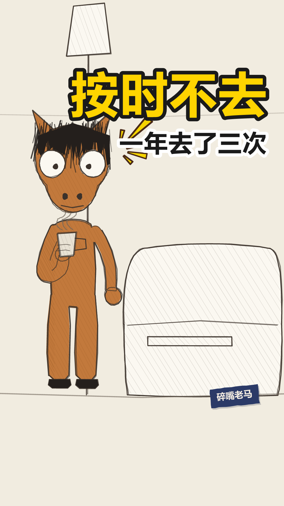

老马 · 稿件与成片
共 10 条 · 目录名带发布日和时刻，排期见 joke-video/horse/SCHEDULE.md
laoma-001
out.mp4 1.3s
1.3s我们组的群里，最恐怖的两个字是收到
 5.1s
5.1s领导发一段话，十七个人排队回收到
 8.6s
8.6s你回晚了，显得不积极。你回早了，显得没看完
 13.6s
13.6s我练了三年，找到了最佳位置，第三个
 17.4s
17.4s第一个像拍马屁，最后一个像敷衍，第三个刚好像是认真读完的
 24.2s
24.2s至于内容，我一个字没看
封面 / 开场 / 定格 / 钩子


落地方案 · 分镜表 · 发布文案方案.md ↗
老马，今天也没辞职。 落地方案
带AUTO标记的区块由npm run preview从当前配置重新生成，改了会被覆盖。
其余部分随便改，重新生成时原样保留。
一、稿件定位
- 类型 A 类（对话反转，一句 punch 驱动全片）
- 一句话讲什么 群里回「收到」是有位置讲究的，他为此练了三年；至于内容，一个字没看。
- 为什么这么分镜
钩子 → 三个铺垫 → 转折 → 揭晓 → 落点，六句。
关键是揭晓和落点是分开的两句，中间停 0.55 秒：
原来它们是一句 41 字的长台词，laoma-check 报「落点句上限 15 字，超了 2.7 倍」。
更要命的是侧边字幕会把整句一次性排出来 —— 观众读完「我一个字没看」才听到他念，
包袱在字幕上先炸了一次，声音到的时候已经是复述（SCRIPT_GUIDE §五）。
拆开之后落点 12 字、单独一屏，两个问题一起解决。
「揭晓」不是落点：它还在解释规律，观众听到那儿只是「哦原来如此」。
真正的落点是把前面三年的功夫一句话全部作废。
- 不能动的地方
- camera: "static" —— 镜头一动，这条线「一个人站着讲」的质感就散了。
跟随是给对话类定的，这儿没有第二个人可跟
- cues 四个音效全关 —— 尤其定格那声「咚」，它等于自己先敲了一下锣
- 落点前那 0.55 秒 —— §四 写着「转折前那半秒是全片最重要的半秒」，
观众在这半秒里自己预判，然后被落点打掉。压缩它等于把包袱的助跑砍了
- 表情弧 心虚 → 不屑 → 笑眯眯 →（定格）瞪＋大汗 ——
前面 25 秒面无表情是为这一下攒的，中间任何一处提前做表情都会泄掉
- 封面 cam: zoom 1.0 —— 构图本身是内容（人在左三分之一、字在右半幅），
推近就只剩半张脸
二、分镜表
| 时间 | 画面 | 台词 | 音效 / BGM |
|---|---|---|---|
| 0:00.0–0:01.2 | 开场空镜 场景 office-desk | — | BGM 关 |
| 0:01.3–0:04.6 | 场景 office-desk 在场 ma 单人镜 | ma：我们组的群里，最恐怖的两个字是收到 | — |
| 0:05.1–0:08.3 | 同上 | ma：领导发一段话，十七个人排队回收到 | — |
| 0:08.6–0:12.6 | 同上 | ma：你回晚了，显得不积极。你回早了，显得没看完 | — |
| 0:12.6–0:13.4 | 闭目 0.8s 不是眨眼 —— 忍耐 | — | 静音 |
| 0:13.6–0:16.8 | 同上 扭头一次：话锋转了。§四 一条最多两次 | ma：我练了三年，找到了最佳位置，第三个 | — |
| 0:17.4–0:23.5 | 同上 | ma：第一个像拍马屁，最后一个像敷衍，第三个刚好像是认真读完的 | — |
| 0:24.2–0:26.8 | 同上 | ma：至于内容，我一个字没看 | — |
| 0:26.8–0:29.5 | 定格去色 + 钩子字幕「老马的第 1847 天」 | — | BGM 骤停 |
三、场景 / 角色 / 节奏
场景 office-desk
节奏 banter
句内 0.18/0.12s 句间 0.35s 换镜 0.50s
| 角色 | 形象 | 音色 |
|---|---|---|
| ma | horse x=290 | 老马 |
片长 29.48s 6 句 1 个分镜
四、发布文案
发平台时直接抄这一段。
- 标题候选
1. 回「收到」，我练了三年 ←主选
2. 我练了三年，就为了回两个字
3. 回「收到」的技巧，我练了三年
原来的主选是「我回消息的位置，是练过的」，换掉了。 它生硬，
而毛病不在少一个招人的词 —— 在「位置」是个抽象概念，读者得在脑子里翻译一道。
这条片子手里最有力的东西全是具体的：三年、两个字、第三个。抽象换具体就不硬了。
选 1 的理由：
- 「收到」摆在第一个字上。职场/群聊人群的强命中词，推荐系统抓关键词时吃得到；
「回消息的位置」一个命中词都没有
- 「练了三年」自带荒唐感，而且是事实陈述不是形容词（§一之四：具体压倒抽象）
- 10 字，竖屏一行不折行
- 落点没剧透。简介同理，写到「找到了最佳位置」为止
2 的数量级反差最狠（三年 vs 两个字），但标题里没有「收到」「群」这些命中词，
推荐系统抓关键词时吃亏。3 用了「技巧」——这不算热词
（体检的热词表是「绝绝子 / yyds / 摆烂」那一档），
但「技巧」是利益承诺，而正文最后一句是「我一个字没看」，等于把教程掀翻：
这是包袱，也可能被读成标题党。
三条都是陈述句、没有感叹号、没有热词——老马不用那种话说事（人设禁忌）。
「敲门砖」那个方向没做：「回收到是职场敲门砖」是总结句，
一总结就成了评论，而这条线的全部力气都花在「只陈述，判断留给你」上。
- 副标题
老马 · 工位 不愤怒，只是看得比谁都清楚 - 内容关键词 职场 / 群聊 / 回消息 / 收到 / 打工人
- 热度关键词 职场 / 打工人日常 / 微信群 / 办公室 / 社畜
- 话题标签 #老马 #职场 #打工人日常 #群聊
- 简介
> 我们组的群里，最恐怖的两个字是收到。
>
> 领导发一段话，十七个人排队回。回晚了显得不积极，回早了显得没看完。
> 我练了三年，找到了最佳位置。
简介到「找到了最佳位置」为止，不许往下写。 落点（「至于内容，我一个字没看」）
是这条片子唯一的包袱，写进简介就是自己先剧透 ——
列表页那一行的任务是让人点开，不是让人看完。
- 封面大字
练了三年
原来是「收到」，出封面时体检报了「大字只有 2 字，太短撑不住画面（建议 4–8 字）」。
换成「练了三年」还顺带跟标题对齐了 —— 标题、封面大字、收尾金句是同一个钩子的三种长度，
分开想必然对不齐。
五、人工核对
- 每一镜的画面和台词对得上（看 index.html 的场景图）
- 音画同步：配音起点落在字幕窗口内
- 站位：
npm run layout零冲突 - 节奏：句间缓冲听着不赶
- 内容风控
laoma-002
out.mp4 1.3s
1.3s我妈每天给我发天气预报
 3.4s
3.4s不是转发的那种，是她自己一个字一个字打的
 6.8s
6.8s明天降温，加衣服。有雨，带伞。风大，别骑车
 13.1s
13.1s我住的这个城市她没来过，但她每天都知道那儿几度
 18.0s
18.0s有一次我跟她说，妈，手机上都有
 21.6s
21.6s她说，我知道啊
 25.0s
25.0s第二天，她还是发了
封面 / 开场 / 定格 / 钩子



落地方案 · 分镜表 · 发布文案方案.md ↗
laoma-002 落地方案
带AUTO标记的区块由npm run preview从当前配置重新生成，改了会被覆盖。
其余部分随便改，重新生成时原样保留。
一、稿件定位
- 类型 A 类（对话反转，一句 punch 驱动全片）
- 一句话讲什么 我妈每天一个字一个字手打天气预报发给我；我说手机上都有，她说她知道，第二天照发。
- 为什么这么分镜
钩子 → 三条原话 → 距离 → 转折（扭头）→ 她的回答 → 张嘴无声 → 落点，七句。
这条稿子跟稿 1 是两种东西：稿 1 是段子，靠一句 punch 把前面全部作废；
这条没有可笑的地方，靠的是「拦不住」。所以结构也不一样 ——
- 铺垫必须是妈妈的原话（明天降温加衣服 / 有雨带伞 / 风大别骑车）。
复述成「她会提醒我加衣服」就完了：原话是证据，复述是评论，
而这条片子一旦开始评论就变成朋友圈鸡汤
- 三条是递进的：加衣服 → 带伞 → 别骑车，一条比一条管得宽。
§一之二 要三个例子，两个认不出规律，四个开始不耐烦
- 落点前那 1.6 秒是全片的核心，见下
- 不能动的地方
- openMouth: 1.6 —— 她说「我知道啊」，他张嘴想反驳，没话说。
前面二十多秒观众已经学会「嘴在动＝有话」，这一下嘴动了没声音，那个空是响的。
方案 §六 原话：「它把口型开但不出声用成了叙事手段 —— 画面的限制反过来变成了表达」。
这条片子就是为这 1.6 秒存在的，压缩它等于把片子拆了
- 没有收尾卡，黑场收（fadeOut: 1.4，不写 hook）。
固定收尾「老马，今天也没辞职。」是段子的 CTA，往这条后面一贴
就成了「刚才那是个段子」—— 而它不是
- 不垫 BGM。 这条稿子最容易犯的错就是垫一段温情钢琴，
那等于替观众定调，而这条线全部的力气都花在「只陈述，判断留给你」上
- 一个漫符都不放，也不挂说话放射。 黄色尖刺是喜剧记号；
符号是画面在替观众下判断 —— 这条片子最忌讳的就是替观众判断
- 落点 9 字，说完就完。 不解释、不总结、后面不再有话
- 定格是闭眼（endPose.eyes: "closed"）。全片唯一一次闭目，
§五：超过 0.5 秒的闭眼读作「忍耐/认命」，很重，所以只能有一次
二、分镜表
| 时间 | 画面 | 台词 | 音效 / BGM |
|---|---|---|---|
| 0:00.0–0:01.2 | 开场空镜 场景 street-night | — | BGM 关 |
| 0:01.3–0:02.9 | 场景 street-night 在场 ma 单人镜 | ma：我妈每天给我发天气预报 | — |
| 0:03.4–0:06.5 | 同上 | ma：不是转发的那种，是她自己一个字一个字打的 | — |
| 0:06.8–0:12.7 | 同上 | ma：明天降温，加衣服。有雨，带伞。风大，别骑车 | — |
| 0:13.1–0:17.4 | 同上 | ma：我住的这个城市她没来过，但她每天都知道那儿几度 | — |
| 0:18.0–0:21.1 | 同上 | ma：有一次我跟她说，妈，手机上都有 | — |
| 0:21.6–0:23.1 | 同上 | ma：她说，我知道啊 | — |
| 0:23.2–0:24.8 | 张嘴，不出声 1.6s 他想说什么，说不出来 | — | 静音 |
| 0:25.0–0:27.1 | 同上 | ma：第二天，她还是发了 | — |
| 0:27.1–0:31.1 | 定格去色 + 黑场 1.4s 不出收尾卡 | — | BGM 骤停 |
三、场景 / 角色 / 节奏
场景 street-night
节奏 banter
句内 0.18/0.12s 句间 0.35s 换镜 0.50s
| 角色 | 形象 | 音色 |
|---|---|---|
| ma | horse x=290 | 老马 |
片长 31.09s 7 句 1 个分镜
四、发布文案
发平台时直接抄这一段。
- 标题候选
1. 我妈每天给我发天气预报 ←主选
2. 我说手机上都有，她说我知道啊
3. 她没来过我这座城，却天天知道几度
选 1 的理由：「回家」这个栏目靠共鸣，不靠悬念。
转发的动机是「这就是我妈」，不是「我想知道结局」——
所以标题要让人一眼认出自己家那位，而不是抛个谜。
- 「妈」「天气预报」都是强命中词，而且是具体的东西，不是「关心」这种形容（§一之四）
- 11 字，竖屏一行不折行
- 落点（第二天她还是发了）没剧透
2 把转折整个放出来了，钩子更强，但它是一句对白，得读两遍才知道谁在说话；
3 最像文案，也最不像老马 —— 「却天天知道几度」是在替观众感慨，
而这条线的全部力气都花在不感慨上。
- 副标题
老马 · 回家 不愤怒，只是看得比谁都清楚 - 内容关键词 妈妈 / 天气预报 / 异地 / 家人 / 微信
- 热度关键词 妈妈 / 父母 / 异地 / 想家 / 亲情 / 打工人
- 话题标签 #老马 #回家 #妈妈 #异地 #家人
- 简介
> 我妈每天给我发天气预报。
>
> 不是转发的那种，是她自己一个字一个字打的。
> 明天降温加衣服，有雨带伞，风大别骑车。
> 我住的这个城市她没来过，但她每天都知道那儿几度。
写到「那儿几度」为止，不许往下写。 转折（妈，手机上都有）和落点
（第二天她还是发了）是这条片子仅有的两下，写进简介就是自己先剧透 ——
列表页那一行的任务是让人点开，不是让人看完。
- 封面大字
我妈的天气预报
五、人工核对
- 每一镜的画面和台词对得上（看 index.html 的场景图）
- 音画同步：配音起点落在字幕窗口内
- 站位：
npm run layout零冲突 - 节奏：句间缓冲听着不赶
- 内容风控
laoma-003
out.mp4 1.3s
1.3s电梯里最难的不是尴尬，是决定看哪儿
 5.0s
5.0s看人不礼貌
 6.3s
6.3s看地上像有心事
 8.2s
8.2s看手机显得不合群，虽然大家都在看手机
 12.5s
12.5s所以我们发明了一个方向，一个共同的
 16.4s
16.4s七个人，看同一个不会变快的数字
封面 / 开场 / 定格 / 钩子



落地方案 · 分镜表 · 发布文案方案.md ↗
老马，今天也没辞职。 落地方案
带AUTO标记的区块由npm run preview从当前配置重新生成，改了会被覆盖。
其余部分随便改，重新生成时原样保留。
一、稿件定位
- 类型 A 类（对话反转，一句 punch 驱动全片）
- 一句话讲什么 电梯里真正难的不是尴尬，是眼睛没地方放；所以七个人一起盯着一个不会变快的数字。
- 为什么这么分镜
钩子 → 三个例子 → 转折（扭头）→ 落点，六句。
- 钩子先否定一个更显然的答案（不是尴尬），再给真的那个。
这一下就是钩子结构本身 —— 观众心里已经有个答案了，你把它拿掉
- 三个例子各占一句，中间留停顿。这是 deadpan 报菜名的节奏，
连着念就成了绕口令。§一之二：两个不足以让人认出规律，四个开始不耐烦
- 转折那句的「发明」是关键词：它把一件人人都在做的小动作说成集体成果，
落点才有得可落
- 落点不解释那个数字是什么。场景里那块楼层屏从第一秒就在画面上，
观众已经看了二十秒了
- 不能动的地方
- 场景 elevator。选它不是为了换个背景 —— 场景里那块楼层屏写死是「12」，
整条片子一格不动，那正是落点说的「不会变快的数字」。
观众听到落点的时候不用想象，抬头就看得见
- 落点里的「七个人」不能改回原稿的「十二个人」。楼层屏写的就是 12，
两个 12 撞在一起，观众分不清说的是人数还是楼层。
而且 §一之四：具体的奇数听起来像真数过，整数像在举例
- 转折句拆成两屏（「所以我们发明了一个方向，」／「一个共同的。」）。
原稿是一整句 14 字，一屏装不下（上限 12），而且「共同的」跟「方向」挤在一起就滑过去了
- 闭目那 0.9 秒。「虽然大家都在看手机」说完闭上眼 —— 全片唯一一次，
§五：超过 0.5 秒的闭眼读作忍耐，很重，只能有一次
- 前 12 秒一个符号都没有（说话放射 setup: 0）。留白是为了让落点有东西可以亮
- 定格是张着嘴，不瞪眼。瞪眼是稿 1 那种「面具啪地掉下来」，这条只到「被自己抓包」那一档 ——
落点是个观察，观察完了没有下文，那个「没说完」正好
- 收尾卡上有一滴大汗（endMark，右上 / 0.5 / seed 2 / tilt 8，跟稿 1 同参）。
第一版这儿是空的：定格去色、一行藏青钩子字，两秒半的静止画面什么都没发生 ——
跟稿 1 摆在一起就看得出来漏了一层。这是系列里固定的一件事，一条一个样观众读不出「又到这儿了」。
原来判成「硬凑」（落点是观察不是自嘲，没有面具可掉），改口的理由在落点自己身上：
「我们发明了一个方向」的「我们」把他自己算进去了 —— 他就是那七个人之一。
上一句还在说「看手机显得不合群，虽然大家都在看手机」，转脸自己也在看那块屏。
这一滴是被自己抓包，不是慌张，跟人设不冲突。
位置和颜色都在干活：漫符不过 ink()，所以定格去色之后它是全屏唯一还有颜色的东西，
视线自然落上去；挂右上正好落在钩子字和头之间那块空墙上，不压头也不压字
二、分镜表
| 时间 | 画面 | 台词 | 音效 / BGM |
|---|---|---|---|
| 0:00.0–0:01.2 | 开场空镜 场景 elevator | — | BGM 关 |
| 0:01.3–0:04.5 | 场景 elevator 在场 ma 单人镜 | ma：电梯里最难的不是尴尬，是决定看哪儿 | — |
| 0:05.0–0:05.9 | 同上 | ma：看人不礼貌 | — |
| 0:06.3–0:07.8 | 同上 | ma：看地上像有心事 | — |
| 0:08.2–0:11.3 | 同上 | ma：看手机显得不合群，虽然大家都在看手机 | — |
| 0:11.4–0:12.3 | 闭目 0.9s 不是眨眼 —— 忍耐 | — | 静音 |
| 0:12.5–0:15.7 | 同上 | ma：所以我们发明了一个方向，一个共同的 | — |
| 0:16.4–0:19.6 | 同上 | ma：七个人，看同一个不会变快的数字 | — |
| 0:19.6–0:22.3 | 定格去色 + 钩子字幕「老马的第 1849 天」 | — | BGM 骤停 |
三、场景 / 角色 / 节奏
场景 elevator
节奏 banter
句内 0.18/0.12s 句间 0.35s 换镜 0.50s
| 角色 | 形象 | 音色 |
|---|---|---|
| ma | horse x=290 | 老马 |
片长 22.33s 6 句 1 个分镜
四、发布文案
发平台时直接抄这一段。
- 标题候选
1. 电梯里最难的是决定看哪儿 ←主选
2. 电梯里最难的不是尴尬
3. 七个人，一个不会变快的数字
选 1 的理由：
- 「电梯」是强命中词，而且一说就有画面 —— 谁都进过电梯
- 「决定看哪儿」是反常识的具体动作。人人都干过，但没人说破过 ——
这条片子全部的价值就在「原来这事有名字」
- 12 字，竖屏一行不折行
- 落点（七个人看同一个数字）没剧透
2 悬念更强（「那是什么？」），但它只否定不给答案 —— 点进来才知道讲什么，
完播率会好，点击率会差；3 直接把落点写在标题上，等于自己先剧透，
点进来只剩「哦，就这个」。
- 副标题
老马 · 众目睽睽 不愤怒，只是看得比谁都清楚 - 内容关键词 电梯 / 尴尬 / 看手机 / 公共场所 / 社交
- 热度关键词 电梯 / 社恐 / 尴尬 / 打工人 / 日常 / 都市
- 话题标签 #老马 #众目睽睽 #电梯 #社恐
- 简介
> 电梯里最难的不是尴尬，是决定看哪儿。
>
> 看人不礼貌。看地上像有心事。
> 看手机显得不合群 —— 虽然大家都在看手机。
写到「虽然大家都在看手机」为止。 转折（我们发明了一个共同的方向）和
落点（七个人看同一个不会变快的数字）是这条片子仅有的两下，
写进简介就是自己先剧透。
- 写法上留的两个尾巴
① 体检报「落点句 16 字，超过 15，能砍就砍」。没砍。
字数是含标点数的，去掉逗号句号是 14 字。而且「同一个」不能省 ——
它接的是转折那句的「一个共同的」，省了就断了。
② 体检报「全片 22.3s（区间 25–32）」。也没补。
这条稿子就这么长，往里塞话或者拉长停顿都是为了一个数字加东西。
而且方案 §七 自己写着：「30 秒的片子完播率低于 50%，说明形态不对，
要往 15–20 秒的纯金句压，而不是往长了写」—— 22 秒在那个方向上，不在反方向。
前三条发出去先看完播率，这条正好是短的那一个对照。
- 封面大字
决定看哪儿
五、人工核对
- 每一镜的画面和台词对得上（看 index.html 的场景图）
- 音画同步：配音起点落在字幕窗口内
- 站位：
npm run layout零冲突 - 节奏：句间缓冲听着不赶
- 内容风控
laoma-004
out.mp4 1.3s
1.3s我点外卖，从来不备注
 3.7s
3.7s不是我不挑，是我知道没用
 6.3s
6.3s我写过不要香菜，来的是双份香菜
 9.4s
9.4s我写过多放辣，来的是一份甜的
 12.1s
12.1s我写过不用餐具，来了三副
 15.4s
15.4s后来我改了个写法，备注只写两个字。随便
 19.8s
19.8s那顿全对。厨房也怕有要求
封面 / 开场 / 定格 / 钩子



落地方案 · 分镜表 · 发布文案方案.md ↗
老马的第 1850 天 落地方案
带AUTO标记的区块由npm run preview从当前配置重新生成，改了会被覆盖。
其余部分随便改，重新生成时原样保留。
一、稿件定位
- 类型 A 类（对话反转，一句 punch 驱动全片）
- 一句话讲什么 提要求换不来想要的东西，不提反而全对了 —— 而对面可能跟你一样，怕的就是有要求。
- 为什么这么分镜 一镜到底，不切。 全片只有一个人在餐桌前说话，切镜会把它变成 PPT（SCRIPT_GUIDE §五：一条切换不超过 3 次，这条用 0）。场景选
kitchen-table而不是rental-living，因为落点指的东西要从第一秒起就在画面上 —— 桌上那盒外卖整条片子没动过，观众听到「那顿全对」时抬眼就看得见。 - 不能动的地方
- x: 290 站位：跟 001/002/003 一模一样。系列里换位置，观众会以为换了个人
- 例三之后 closeEyes: 0.9：全片唯一一次闭目，是「受不了」不是眨眼。§五 规定超过 0.5 秒读作忍耐，全片最多一次，且不能用在落点句
- 转折句里「随便。」单独占一屏：它是全片的枢纽，跟前面三条的「提要求」正好相反，挤进句子里会滑过去
- 落点两句都用 叙平（−26%）：2026-08-21 渲过三档试听（同目录 试听-落点-*.wav）—— 甲 现状 / 乙 前快后慢（平 ＋ 叙缓）/ 丙 反过来（泄气 ＋ 平）。听完定的是保持现状，别再改成有落差的那两档
- 落点 13 字：§一之九 的上限是 15。原稿是 20 字的「我怀疑厨房那边也一样，最怕的就是有要求」，砍掉「我怀疑」是因为那把包袱推远了一层
- 收尾卡上那个灯泡（endMark，右上 / 0.45 / seed 2 / tilt 8）。第一版这儿是空的：定格去色、一行藏青钩子字，两秒七的静止画面什么都没发生 —— 这条的场景是餐桌，去色之后桌沿一道灰、桌上那两个外卖盒是两个空心浅灰方块，比稿 4 那条还秃（那条至少还有块楼层屏「12」压着）。口径见 老马出片方案 §五：出收尾卡的片子，卡上不能只有一行钩子字
- 是灯泡不是汗滴。 稿 1 / 稿 4 挂的那滴汗是「被自己抓包」，只在他把自己也算进去的时候才成立；这一条的落点「厨房也怕有要求」是站在事外下的一个推断，挂汗就是硬凑。灯泡对得上两头：落点本身是一次「想通了」（试出了写「随便」这个办法，还真管用），而 marks.mjs 给灯泡的备注是「自带反讽：老马想通的多半是件没用的事」—— 他悟出来的是「想拿到东西就别提要求」，这条道理越成立越丧
- 颜色是挑过的：漫符不过 ink()，收尾卡全屏去色，这一个是那一帧上唯一还有颜色的东西，视线才落得上去。灯泡 #F2D98A 暖黄活得下来；语义上更贴的「点」（无语）是灰的，挂上去跟去色的画面同一个调，看得见但不亮
二、分镜表
| 时间 | 画面 | 台词 | 音效 / BGM |
|---|---|---|---|
| 0:00.0–0:01.2 | 开场空镜 场景 kitchen-table | — | BGM 关 |
| 0:01.3–0:03.2 | 场景 kitchen-table 在场 ma 单人镜 | ma：我点外卖，从来不备注 | — |
| 0:03.7–0:05.8 | 同上 | ma：不是我不挑，是我知道没用 | — |
| 0:06.3–0:09.0 | 同上 | ma：我写过不要香菜，来的是双份香菜 | — |
| 0:09.4–0:11.7 | 同上 | ma：我写过多放辣，来的是一份甜的 | — |
| 0:12.1–0:14.2 | 同上 | ma：我写过不用餐具，来了三副 | — |
| 0:14.3–0:15.2 | 闭目 0.9s 不是眨眼 —— 忍耐 | — | 静音 |
| 0:15.4–0:19.1 | 同上 | ma：后来我改了个写法，备注只写两个字。随便 | — |
| 0:19.8–0:22.8 | 同上 | ma：那顿全对。厨房也怕有要求 | — |
| 0:22.8–0:25.5 | 定格去色 + 钩子字幕「老马的第 1850 天」 | — | BGM 骤停 |
三、场景 / 角色 / 节奏
场景 kitchen-table
节奏 banter
句内 0.18/0.12s 句间 0.35s 换镜 0.50s
| 角色 | 形象 | 音色 |
|---|---|---|
| ma | horse x=290 | 老马 |
片长 25.49s 7 句 1 个分镜
四、发布文案
发平台时直接抄这一段。
- 标题候选
1. 我点外卖，从来不备注 ←主选
2. 备注写了两个字，那顿全对
3. 我写不要香菜，来的是双份香菜
- 为什么是第 1 个 它就是钩子原句，跟封面大字「从来不备注」是同一句话的两种长度（标题 / 封面大字 / 钩子对齐，见 plan.ts）。第 2 个把转折抖在标题里，点进来就少了一层；第 3 个最好笑，但那是铺垫不是落点，标题用掉之后片子里那句就不新鲜了。
- 副标题
老马 · 一个人住 不是不挑，是知道没用 - 内容关键词 外卖备注 / 独居 / 点外卖 / 随便 / 一个人吃饭
- 热度关键词 外卖 / 香菜 / 独居生活 / 打工人日常 / 一个人住
- 话题标签 #独居 #一个人生活 #外卖
- 简介
> 我点外卖，从来不备注。
>
> 不是我不挑，是我知道没用。写过不要香菜，来的是双份香菜；写过多放辣，来的是一份甜的。
> 后来我改了个写法。
- 封面大字
从来不备注
五、人工核对
- 每一镜的画面和台词对得上（看 index.html 的场景图）
- 音画同步：配音起点落在字幕窗口内
- 站位：
npm run layout零冲突 - 节奏：句间缓冲听着不赶
- 内容风控
laoma-005
out.mp4 1.3s
1.3s我们公司有个词，我到现在也没弄明白，它叫对齐
 5.7s
5.7s开会前，要先对齐一下
 8.3s
8.3s开会的时候，全程都在对齐
 11.3s
11.3s开完会发个文档，确认刚才对齐了
 15.1s
15.1s上周有件事，一句话能说完，我们对齐了三次
 19.7s
19.7s第三次的结论是，下周接着对齐
封面 / 开场 / 定格 / 钩子


落地方案 · 分镜表 · 发布文案方案.md ↗
老马的第 1851 天 落地方案
带AUTO标记的区块由npm run preview从当前配置重新生成，改了会被覆盖。
其余部分随便改，重新生成时原样保留。
一、稿件定位
- 类型 A 类（对话反转，一句 punch 驱动全片）
- 一句话讲什么 一个所有人天天挂在嘴上、谁也说不清是什么意思的词 —— 而它唯一稳定的产出，是下一次它自己。
- 为什么这么分镜 一镜到底，不切。 全片只有一个人在会议室里说话，切镜会把它变成 PPT（SCRIPT_GUIDE §五：一条切换不超过 3 次，这条用 0）。场景选
meeting-room而不是沿用 001 的office-desk：落点指的东西要从第一秒起就在画面上 —— 那块白板上画着四行潦草的横线，不是字，是「写满了但一个字也认不出来」，那就是「对齐」这件事的样子；观众听到落点时，那块板他已经看了二十多秒。同属工位栏目但换了场景，也是为了第五条别让人以为是重发。 - 不能动的地方
- x: 290 站位：跟 001–004 一模一样。系列里换位置，观众会以为换了个人
- 字幕正好落在白板里，这是撞上的，但要留着。 侧边字幕的列是算出来的（角色框右边 +44，一直吃到画幅右边留 56），实测 x 509–1024；白板画在 430–1034。两者几乎重合 —— 于是每一屏字都排在白板上，看着像他说的话被写到了板上。这条片子讲的就是「写满了一板子，一个字也没用」，比排在空墙上贴题得多。⚠ 但这意味着字幕列和白板是绑死的：动白板的尺寸、动 x、动 sideText 的 GAP/EDGE，都会让字骑在板子边框上（一半在板上一半在墙上，那就成事故了）。改任何一个都要重看一遍 03/05/07 三张场景图
- 三条例子的 padAfter 必须等长（0.3）：§四 要的是「短且等长」，节拍立不住，转折前那半秒就没有对比。三句长短本来就参差，停顿再不齐就成了在讲故事
- 例三之后 closeEyes: 0.9：全片唯一一次闭目，是「受不了」不是眨眼。§五 规定超过 0.5 秒读作忍耐，全片最多一次，且不能用在落点句。⚠ padAfter: 1.05 是为它加长的，改小会让闭目咬进下一句（体检拦）
- 落点末词是「对齐」，不是「一次」：原大纲写的是「对齐的结论是，这件事还需要再对齐一次。」—— 16 字超上限，而且最后一个词是量词，包袱落在倒数第三个字上，正是 §一之一 说的毛病。现在 13 字、末词砸回「对齐」
- 转折里的「三次」不能换成大纲原来的「两个小时」：§一之四 具体的奇数听起来像真数过；更要紧的是「小时」量时长、「次」量回合，回合数才接得上落点的「第三次」
- 落点两句都用 叙平：§四 落点句语速 0.85、不加重音 —— 加重音等于自己先笑了
- 收尾卡那个「冷」：见下
- 收尾卡上必须有东西（endMark，冷 / 右上 / 0.42 / seed 2 / tilt 8）。口径见 老马出片方案 §五：出收尾卡的片子，卡上不能只有一行钩子字 —— 定格去色 ＋ 一行藏青字，两秒七什么都不发生，观众读作「没做完」而不是「克制」
- 是「冷」不是汗、不是灯。 汗＝被自己抓包（稿 1 面具掉下来，稿 4 他就是那七个人之一）；灯＝想通了一件没用的事（稿 3 试出写「随便」那个办法）。这一条两样都不是：他没被抓包，也没想通任何事 —— 他发现的是这件事没有出口，第三次会的产出是第四次会。那一下是后背一紧。颜色也过了那道关：漫符不过 ink()，收尾卡全屏去色，这一个是那一帧上唯一还有颜色的东西；语义上也贴的「点」（无语）和「云」（丧）都是灰调的，挂上去看得见但不亮
二、分镜表
| 时间 | 画面 | 台词 | 音效 / BGM |
|---|---|---|---|
| 0:00.0–0:01.2 | 开场空镜 场景 meeting-room | — | BGM 关 |
| 0:01.3–0:05.3 | 场景 meeting-room 在场 ma 单人镜 | ma：我们公司有个词，我到现在也没弄明白，它叫对齐 | — |
| 0:05.7–0:07.9 | 同上 | ma：开会前，要先对齐一下 | — |
| 0:08.3–0:10.9 | 同上 | ma：开会的时候，全程都在对齐 | — |
| 0:11.3–0:14.0 | 同上 | ma：开完会发个文档，确认刚才对齐了 | — |
| 0:14.1–0:15.0 | 闭目 0.9s 不是眨眼 —— 忍耐 | — | 静音 |
| 0:15.1–0:19.1 | 同上 | ma：上周有件事，一句话能说完，我们对齐了三次 | — |
| 0:19.7–0:23.2 | 同上 | ma：第三次的结论是，下周接着对齐 | — |
| 0:23.2–0:25.9 | 定格去色 + 钩子字幕「老马的第 1851 天」 | — | BGM 骤停 |
三、场景 / 角色 / 节奏
场景 meeting-room
节奏 banter
句内 0.18/0.12s 句间 0.35s 换镜 0.50s
| 角色 | 形象 | 音色 |
|---|---|---|
| ma | horse x=290 | 老马 |
片长 25.95s 6 句 1 个分镜
四、发布文案
发平台时直接抄这一段。
- 标题候选
1. 我们公司有个词，我到现在也没弄明白 ←主选
2. 上周有件事，我们对齐了三次
3. 开会前对齐，开会时对齐，开完会确认对齐了
- 为什么是第 1 个 它就是钩子原句，而且故意不说那个词是什么 —— 悬念留在片子里，点进来第三屏才揭晓。跟封面大字「对齐了三次」唱双簧：标题问是什么，封面答是几次，两边都不剧透落点。第 2 个把转折抖在标题上，点进来就少了一层；第 3 个最像段子，但它是铺垫，标题用掉之后片子里那三句就不新鲜了。
- 副标题
老马 · 工位 第三次的结论，是下周再来一次 - 内容关键词 对齐 / 开会 / 职场黑话 / 无效会议 / 打工人
- 热度关键词 职场黑话 / 互联网黑话 / 开会 / 无效会议 / 打工人日常
- 话题标签 #职场黑话 #开会 #打工人
- 简介
> 我们公司有个词，我到现在也没弄明白。
>
> 开会前要先对齐一下，开会的时候全程都在对齐，开完会还要发个文档，确认刚才对齐了。
> 上周有件事，我们对齐了三次。
- 封面大字
对齐了三次
五、人工核对
- 每一镜的画面和台词对得上（看 index.html 的场景图）
- 音画同步：配音起点落在字幕窗口内
- 站位：
npm run layout零冲突 - 节奏：句间缓冲听着不赶
- 内容风控
laoma-006
out.mp4 1.3s
1.3s健身卡这个东西，我买的时候不当运动，当理财
 5.6s
5.6s一次性存一笔钱进去，然后就不管了
 8.9s
8.9s每个月按时不去，一次也没落下
 11.7s
11.7s一年下来我去了三次，平均一次四百块
 16.4s
16.4s上个月他们打电话来，说卡快到期了，问我续不续
 21.5s
21.5s续吧。我也没打算取
封面 / 开场 / 定格 / 钩子



落地方案 · 分镜表 · 发布文案方案.md ↗
老马的第 1852 天 落地方案
带AUTO标记的区块由npm run preview从当前配置重新生成，改了会被覆盖。
其余部分随便改，重新生成时原样保留。
一、稿件定位
- 类型 A 类（对话反转，一句 punch 驱动全片）
- 一句话讲什么 把一张办了不去的健身卡当成理财产品来讲 —— 讲到最后他续了费，理由是这笔钱他本来也没打算取回来。
- 为什么这么分镜 一镜到底，不切。 全片一个人在出租屋客厅说话，切镜会把它变成 PPT（SCRIPT_GUIDE §五：一条切换不超过 3 次，这条用 0）。场景选
rental-living：落点指的东西要从第一秒起就在画面上 —— 这条讲的是健身卡，那画面上该有的不是健身房，是他这二十几秒实际待着的地方，一张占了右半幅的沙发。没选bedroom：床太直白，等于替观众把话说完；沙发说的是「他没在健身」，不是「他在偷懒」，差一档。 - 不能动的地方
- x: 290 站位：跟 001–005 一模一样。系列里换位置，观众会以为换了个人
- 例一那个「存」不能改字。 它是落点「取」的唯一线索（§一之三 误导必须公平）。换成「交一笔钱」「充一笔钱」，最后那个「取」就落空了
- 三条例子的 padAfter 必须等长（0.3）：§四 要「短且等长」，节拍立不住，转折前那半秒就没有对比
- 例三之后 closeEyes: 0.9：全片唯一一次闭目，是「受不了」不是眨眼。⚠ padAfter: 1.05 是为它加长的，改小会让闭目咬进下一句（体检拦）
- 落点「续吧。」后面那 0.38 秒不能删。 观众在这 0.38 秒里以为落点就是「唉，又续了」，然后才挨到真的那一下。两小句同屏＝提前剧透
- 不要把落点改成「我也不打算去」：那只是重复前面说过的事实。「取」是理财那套词，是新信息，而且悄悄承认了这笔钱他压根没想要回来
- 「三次」「四百块」不能凑成整数：§一之四，奇数和非整数听起来像真数过。一千二这个总数故意不说出口，让观众自己乘 —— 自己算出来的数字比听来的有劲
- 收尾卡那滴汗：见下
- 收尾卡上必须有东西（endMark，汗 / 右上 / 0.5 / seed 2 / tilt 8）。口径见 老马出片方案 §五
- 语义上的第一人选其实是「云」（丧 / 认了），渲出来对比过：云画得清清楚楚，但它整个在灰调里（#D8D2C6 加墨线），去色之后跟整幅画同一个调子，读作画面的一部分，不是「那一帧上唯一还活着的东西」。退回汗也站得住：他刚花二十秒把这张卡算得明明白白，下一秒当着镜头说「续吧」，那一下的尴尬是真的。⚠ 这是第三条用汗的（001 / 003 / 006），再用之前先问一句是不是真的「被自己抓包」 —— 一旦变成缺省就退化成频道 logo
二、分镜表
| 时间 | 画面 | 台词 | 音效 / BGM |
|---|---|---|---|
| 0:00.0–0:01.2 | 开场空镜 场景 rental-living | — | BGM 关 |
| 0:01.3–0:05.2 | 场景 rental-living 在场 ma 单人镜 | ma：健身卡这个东西，我买的时候不当运动，当理财 | — |
| 0:05.6–0:08.5 | 同上 | ma：一次性存一笔钱进去，然后就不管了 | — |
| 0:08.9–0:11.3 | 同上 | ma：每个月按时不去，一次也没落下 | — |
| 0:11.7–0:15.3 | 同上 | ma：一年下来我去了三次，平均一次四百块 | — |
| 0:15.3–0:16.2 | 闭目 0.9s 不是眨眼 —— 忍耐 | — | 静音 |
| 0:16.4–0:20.8 | 同上 | ma：上个月他们打电话来，说卡快到期了，问我续不续 | — |
| 0:21.5–0:23.7 | 同上 | ma：续吧。我也没打算取 | — |
| 0:23.7–0:26.4 | 定格去色 + 钩子字幕「老马的第 1852 天」 | — | BGM 骤停 |
三、场景 / 角色 / 节奏
场景 rental-living
节奏 banter
句内 0.18/0.12s 句间 0.35s 换镜 0.50s
| 角色 | 形象 | 音色 |
|---|---|---|
| ma | horse x=290 | 老马 |
片长 26.44s 6 句 1 个分镜
四、发布文案
发平台时直接抄这一段。
- 标题候选
1. 健身卡这个东西，我买的时候不当运动 ←主选
2. 每个月按时不去，一次也没落下
3. 一年去了三次，平均一次四百块
- 为什么是第 1 个 它是钩子原句，而且故意断在「不当运动」上 —— 那当什么？悬念留给片子，第三屏才揭晓。跟封面大字「按时不去」唱双簧：封面给的是那个错位，标题给的是那个反常识断言，两边都不碰落点。第 2 个最好笑，但它是铺垫，标题用掉之后片子里那句就不新鲜了；第 3 个把最具体的细节先抖出来，等于把观众自己乘一千二的乐趣拿走了。
- 副标题
老马 · 一个人住 续吧，反正也没打算取 - 内容关键词 健身卡 / 办卡不去 / 续费 / 独居 / 沉没成本
- 热度关键词 健身卡 / 健身房 / 办卡 / 打工人日常 / 一个人住
- 话题标签 #健身卡 #一个人生活 #独居
- 简介
> 健身卡这个东西，我买的时候不当运动，当理财。
>
> 一次性存一笔钱进去，然后就不管了。每个月按时不去，一次也没落下。
> 一年下来我去了三次。上个月他们打电话来，说卡快到期了。
- 封面大字
按时不去
五、人工核对
- 每一镜的画面和台词对得上（看 index.html 的场景图）
- 音画同步：配音起点落在字幕窗口内
- 站位：
npm run layout零冲突 - 节奏：句间缓冲听着不赶
- 内容风控
laoma-007
out.mp4 0.0s
0.0s上个月优化以后，报销要过七个人
 3.4s
3.4s优化以前是这样，找我领导签个字，三天
 7.1s
7.1s现在不用找人了，打开系统，自己提交
 10.8s
10.8s系统里有七个节点，每个节点一个人点同意，都是我同事
 16.0s
16.0s上周我报了一笔打车费，一共三十七块，当天就提了
 20.8s
20.8s今天，第十一天
封面 / 开场 / 定格 / 钩子


落地方案 · 分镜表 · 发布文案方案.md ↗
老马的第 1853 天 落地方案
带AUTO标记的区块由npm run preview从当前配置重新生成，改了会被覆盖。
其余部分随便改，重新生成时原样保留。
一、稿件定位
- 类型 A 类（对话反转，一句 punch 驱动全片）
- 一句话讲什么 一个流程被优化了：签字的人从一个变成七个，三天变成十一天 —— 而他从头到尾没说过一句「这不合理」。
- 为什么这么分镜 一镜到底，不切。 全片一个人在工位说话，切镜会把它变成 PPT（SCRIPT_GUIDE §五：一条切换不超过 3 次，这条用 0）。场景选
office-desk：落点指的东西要从第一秒起就在画面上 —— 那台显示器就是「系统」，观众听到「第十一天」的时候，那块屏他已经看了二十多秒。跟 001 同场景但隔了六条，而且 001 讲群消息、这条讲审批流；工位栏目只有两个场景，005 刚用过 meeting-room。 - 出场走档 ③「先出声 · 物件」（
opening: { style: "object-first" }，2026-08-22 换的，这是这一档的第一条片子）。
首帧是系统那张审批单的特写（七个节点排成一列）＋ 一行「报销要过七个人」，其中「七」标朱红；
音轨从 0.0 起，第 1 句一停字就撤，他在那半秒静音里滑进来。片长 27.1 → 25.4。
⚠ 「系统」看着是抽象物件，但 007 讲的那个系统有一个非常具体的样子 —— 一张审批流的单子。
观众不用认出「这是系统」，认出「这是一串要人挨个点的东西」就够了。
- 第 1 句是为这一档重写的。 原来那句「我们公司上个月，优化了一个流程，报销的那个。」
是交代不是断言，而且整句没有一个数字，切不出合格的 frameText（要 ≤8 字、第 1 句的连续子串、含一个数）。
改法照规范 §一 那张表自己给的那一行：「优化以后，报销要过七个人」→ 报销要过七个人。
顺带治了「我们公司」开头那个定位语的毛病 —— 规范说前 8 个字必须是数字或反常，「我在哪」交给画面。
- 不能动的地方
- x: 290 站位：跟 001–006 一模一样
- 例一那个「三天」不能删、不能并屏。 它是落点「第十一天」唯一的尺子（§一之三 误导必须公平）—— 没有这个基准，十一天只是个数字，观众量不出长短
- 例二不能带贬义。 「不用找人了，打开系统，自己提交」听上去必须是个改进，观众跟着以为这是进步，第三条才打得下去
- 三条例子的 padAfter 必须等长（0.3）：§四 要「短且等长」，节拍立不住，转折前那半秒就没有对比
- 例三之后 closeEyes: 0.9：全片唯一一次闭目。⚠ padAfter: 1.05 是为它加长的，改小会让闭目咬进下一句（体检拦）
- 落点「今天，」后面那 0.4 秒不能删。 观众在这 0.4 秒里知道要来一个数，但不知道是几 —— 这半拍就是让他自己先猜一个，然后被那个数打掉
- 不要把落点改成「到今天还没批下来」：那是在解释，而且末词成了「下来」不是那个数。数字自己就是包袱，多一个字都是替观众下判断
- 三天 / 七个 / 三十七块 / 十一天，四个数一个都不能凑成整数：§一之四，奇数和非整数听起来像真数过
- 物件是「系统」（object 字段，出现在第 3、4 两句）。§一之十二 判据：删掉它至少有一句话说不通 ——
删掉系统，「打开系统，自己提交」和「系统里有七个节点」当场垮掉。而且全片一个字都没解释它：
谁做的、为什么七个节点、凭什么去掉一个人要加七个人。物件要有用，不给的是解释。
- 钩子 2 → 回收 6（hookLine / payoffLine）：第 2 句「找我领导签个字，三天」，第 6 句「今天，第十一天」——
量度回收，字面共用一个「天」，那正是被比较的单位。不能写成钩子 1：第 1 句没埋任何具体的东西，跟落点一个实词都不重叠
- ⚠ 2026-08-22 删掉了转折句末尾的「发票是绿的。」。 那是上一版 §一之十二（要「闲置物件」）催生的装饰：
纯外观描述、只出现一次、删掉毫发无伤 —— 新规范点名的反例，体检的 APPEARANCE 正则就是照它写的。别再补回去
- 收尾卡那个问号：见下
- 收尾卡挂问号，不是汗也不是灯。 这一条的第二层就是一个问句：他把账算完了，全程一个判断都没下，那句没说出口的「所以这优化了什么」交给收尾卡 —— 它不是替观众下判断，它就是观众自己的那句话。汗＝被自己抓包（这条他是受害者），灯＝想通了（他什么都没想通），都不对
- ⚠ 挑它的时候顺带修了一条我自己写的规矩：老马出片方案 §五 原来写「漫符必须是那一帧上唯一有颜色的东西」，按那条问号该被排除（它是墨色）。渲出来判据该是落差不是颜色 —— 问号近黑压在浅墙上，明度差比那滴淡蓝的汗还大。真正挂不住的是中间调（点、云）
二、分镜表
| 时间 | 画面 | 台词 | 音效 / BGM |
|---|---|---|---|
| 0:00.0–0:00.0 | 开场空镜 场景 office-desk | — | BGM 关 |
| 0:00.0–0:02.9 | 场景 office-desk 在场 ma 单人镜 | ma：上个月优化以后，报销要过七个人 | — |
| 0:03.4–0:06.7 | 同上 | ma：优化以前是这样，找我领导签个字，三天 | — |
| 0:07.1–0:10.4 | 同上 | ma：现在不用找人了，打开系统，自己提交 | — |
| 0:10.8–0:14.9 | 同上 | ma：系统里有七个节点，每个节点一个人点同意，都是我同事 | — |
| 0:14.9–0:15.8 | 闭目 0.9s 不是眨眼 —— 忍耐 | — | 静音 |
| 0:16.0–0:20.2 | 同上 | ma：上周我报了一笔打车费，一共三十七块，当天就提了 | — |
| 0:20.8–0:22.7 | 同上 | ma：今天，第十一天 | — |
| 0:22.7–0:25.4 | 定格去色 + 钩子字幕「老马的第 1853 天」 | — | BGM 骤停 |
三、场景 / 角色 / 节奏
场景 office-desk
节奏 banter
句内 0.18/0.12s 句间 0.35s 换镜 0.50s
| 角色 | 形象 | 音色 |
|---|---|---|
| ma | horse x=290 | 老马 |
片长 25.42s 6 句 1 个分镜
四、发布文案
发平台时直接抄这一段。
- 标题候选
1. 我们公司上个月优化了一个流程 ←主选
2. 优化以前找领导签个字，三天
3. 一笔三十七块的打车费
- 为什么是第 1 个 它是钩子原句，「优化」这两个字放在标题里自带反讽，而且它不说优化成了什么 —— 悬念全留在片子里。跟封面大字「优化以后」唱双簧：大字问「以后怎么样了」，标题给「上个月优化了」，两边都不碰落点那个数。第 2 个把基准值抖在标题上，观众就有了预期；第 3 个最抓人，但它是转折句，用掉之后片子里那句就不新鲜了。
- 副标题
老马 · 工位 签字的人从一个变成七个 - 内容关键词 优化流程 / 报销 / 审批 / 无效流程 / 打工人
- 热度关键词 报销 / 审批流程 / 优化 / 职场黑话 / 打工人日常
- 话题标签 #报销 #职场 #打工人
- 简介
> 我们公司上个月，优化了一个流程，报销的那个。
>
> 优化以前是这样：找我领导签个字，三天。优化以后不用找人了，打开系统，自己提交。
> 系统里有七个节点，每个节点一个人点同意。
- 封面大字
优化以后
五、人工核对
- 每一镜的画面和台词对得上（看 index.html 的场景图）
- 音画同步：配音起点落在字幕窗口内
- 站位：
npm run layout零冲突 - 节奏：句间缓冲听着不赶
- 内容风控
laoma-008
out.mp4 0.0s
0.0s我在医院等叫号，屏上写着，前面还有二十三位
 4.5s
4.5s它不写还要等多久，只写一个数
 7.9s
7.9s这个数掉得没规律，能十七分钟不动
 11.2s
11.2s边上还有一扇小门，时不时进去一个人，屏上那个数不动
 16.9s
16.9s我在那张椅子上，坐了一个半小时，没敢走开
 21.2s
21.2s屏上少了两位。小门进去了五个
封面 / 开场 / 定格 / 钩子


落地方案 · 分镜表 · 发布文案方案.md ↗
老马的第 1854 天 落地方案
带AUTO标记的区块由npm run preview从当前配置重新生成，改了会被覆盖。
其余部分随便改，重新生成时原样保留。
一、稿件定位
- 类型 A 类（对话反转，一句 punch 驱动全片）
- 一句话讲什么 同一段时间里，正门的队伍挪了两位，旁边那扇没人解释过的小门进去了五个 —— 荒唐的不是等，是这两个数摆在一起的样子。
- 为什么这么分镜 一镜到底，不切。 全片一个人在候诊区说话，切镜会把它变成 PPT（SCRIPT_GUIDE §五：一条切换不超过 3 次，这条用 0）。场景选
hospital：落点指的东西要从第一秒起就在画面上 —— 屏上写死「A047 / 前面还有 23 位」，整条片子一格不动，观众听到「它少一位的时候」，那个 23 他已经盯了二十多秒了。这是稿 4《看哪儿》那块楼层屏的同一手。这个场景第一次用：众目睽睽只有三个场景，003 用掉 elevator，subway 留给「地铁上的让座」。 - 出场走「先出声，后出人」（
opening: { style: "voice-first" }，2026-08-22 换的，这是这一档的第一条片子）。
首帧是场景 ＋ 一行大字「前面还有二十三位」，第 1 句的声音同时起；
他在第 1 句说完那半秒静音里滑进来。台词一个字没改，只是没有了 1.35 秒的开场空镜 —— 片长 28.7 → 27.3。
⚠ 这一条白捡了一层：叫号屏上写着「前面还有 23 位」，大字和屏上那行字说的是同一句。
挑这条开这档的判据：落点靠两个数，而第 1 句里就有一个数摆得出来（二十三）。
009 的钩子是「我们开会有一句话」，抽象句撑不住那么大的字号，那条留在老样子。
- 不能动的地方
- x: 290 站位：跟 001–007 一模一样。系列里角色的站位要固定
- 稿子里的「二十三」必须跟屏上那个数一致。 它不是随手写的数，是观众正看着的那个 —— 改稿改到这个数，得连 horse/scenes.mjs 的 hospital 一起改
- 例二那句「能十七分钟不动，也能一下少两个」不能删、不能并屏。 它是落点唯一的尺子（§一之三 误导必须公平）：先给出「一下少两个」这个上限，观众才量得出「少一位」是最小的那一档，为它鼓掌才荒唐。没有这句，落点只是一个人在傻乐
- 例三不能挖到人身上。 「时不时进去一个人」挖的是这套系统，不是插队的人 —— 老马对世界没有敌意（人设：他不觉得别人坏，只觉得事情就是这样）。写成「有人插队」这条稿就废了
- 三条例子的 padAfter 必须等长（0.3）：§四 要「短且等长」，节拍立不住，转折前那半秒就没有对比
- 例三之后 closeEyes: 0.9：全片唯一一次闭目。⚠ padAfter: 1.05 是为它加长的，改小会让闭目咬进下一句（体检拦）
- 物件是「小门」（object，第 4、6 两句）。§一之十二 判据：删掉小门，第 4 句整句没了、落点塌一半。
全片一个字都没解释它：谁能走？凭什么？—— 这就是「未解释」和「闲置」的区别，它一直在起作用，只是讲的人懒得解释
- 钩子 4 → 回收 6：第 6 句字面复现「小门」。不许写成「那扇门」「旁边那个口子」——
听觉媒介，观众没法回看，换个说法他得先认出「这说的是刚才那个」，那一下的迟疑正好盖住笑点（§一之十四）
- ⚠ 落点改过两版，别往回退。
初版「它少一位的时候，我差点鼓掌」是反应句（§一之十三 判废）。
二版「一个半小时，我看着它掉了一位」是事实了，但跟小门没关系 —— 埋了不收，而且比的是「时长 vs 一位」，那是他一个人的账。
现在这版比的是同一段时间里正门两个、侧门五个，账是这套系统的（§八：制度性荒诞 > 个人倒霉）。
- 落点「屏上少了两位。」后面那 0.4 秒不能删。 观众在这 0.4 秒里以为讲完了（不就是等半天挪两位嘛），然后小门被端出来
- 高亮给「五个」不是「两位」 —— 末词才是笑点（§一之一）
- ⚠ 第 3 句砍掉了「也能一下少两个。」 ——「两」这个量留给落点，一条稿子里同一个量别出现两次（§一之十六）
- ⚠ 转折句末尾的「手里的挂号单是粉色的。」删了。 上一版规范催生的装饰，纯外观描述、只出现一次，而且把那句顶到 25 字，超了 §一之十五 的 24 字上限
- 三条例子的 padAfter 必须等长（0.3）：§四 要「短且等长」，节拍立不住，转折前那半秒就没有对比
- 例三之后 closeEyes: 0.9：全片唯一一次闭目。⚠ padAfter: 1.05 是为它加长的，改小会让闭目咬进下一句（体检拦）
- ⚠ 落点是 2026-08-22 重写过的，别改回去。 初版是「它少一位的时候，我差点鼓掌」——
那是反应不是事实（§一之十三）。「我差点鼓掌」已经替观众把这件事归好了档：「这是个可笑的反应」，
观众只剩点头的份。现在的「一个半小时，我看着它掉了一位」什么都没归档，荒唐感是观众自己从两个数之间量出来的。
量出来的比递到手上的重。
- 「我」留着，动词换了。 §一之十一 第一人称照旧贯穿 —— 分界在动词：「我看着」是事实，「我差点」是反应。
写成光秃秃的「它掉了一位」会把人从画面里抽走
- 「一个半小时」必须跟「一位」挨着出。 它原来在转折句里，那等于提前把尺子给出去，落点只剩一个数没东西可比
- 落点「一个半小时，」后面那 0.4 秒不能删。 观众在这 0.4 秒里知道要来一个量，但猜不到有多小 —— 这半拍是让他自己先估一个
- ⚠ 转折句末尾那句「手里的挂号单是粉色的。」不能删 —— §一之十二 的未解释的具体物件。
它不影响等多久、不是笑点的一环，删掉落点一个字都不用改。挑颜色不挑「折了三折」，是因为
①单据的颜色明摆着是惰性的，没人会当它是伏笔（§一之十二 警告过「别挑跟笑点沾边的」）；②「折」有三读，颜色零多音字风险
- 不要把落点写成「我差点鼓起掌来」：多两个字，末词就从「鼓掌」滑到「起来」了（§一之一 笑点落在最后一个词）
- 二十三 / 十七 / 一个半 / 一位，四个数一个都不能凑成整数：§一之四，奇数和非整数听起来像真数过
- 收尾卡挂汗，不是问也不是灯。 §五 的判据：汗＝落点把他自己也算进去、当场被自己抓包。这条正是 —— 抓包的人是他自己。稿 7 的问号不对（那条他是受害者、站在事外），灯不对（他什么都没想通）。参数照抄不换 seed
- ⚠ 叫号屏的高度是为收尾卡让出来的，不要改回去。 原来 470×230（y 89–319）跟钩子字幕（画死在 y=250，墨迹 268–313、横跨 x 324–756）正好叠在一起，而屏是 DARK、钩子是藏青，字直接看不见。这是 003 那块楼层屏踩过的坑（「场景里靠上的元素跟收尾卡是同一片地」），那次是渲出来才发现，这次是渲之前量的。改成 470×152（底 y≈241）
二、分镜表
| 时间 | 画面 | 台词 | 音效 / BGM |
|---|---|---|---|
| 0:00.0–0:00.0 | 开场空镜 场景 hospital | — | BGM 关 |
| 0:00.0–0:04.0 | 场景 hospital 在场 ma 单人镜 | ma：我在医院等叫号，屏上写着，前面还有二十三位 | — |
| 0:04.5–0:07.5 | 同上 | ma：它不写还要等多久，只写一个数 | — |
| 0:07.9–0:10.8 | 同上 | ma：这个数掉得没规律，能十七分钟不动 | — |
| 0:11.2–0:15.7 | 同上 | ma：边上还有一扇小门，时不时进去一个人，屏上那个数不动 | — |
| 0:15.8–0:16.7 | 闭目 0.9s 不是眨眼 —— 忍耐 | — | 静音 |
| 0:16.9–0:20.5 | 同上 | ma：我在那张椅子上，坐了一个半小时，没敢走开 | — |
| 0:21.2–0:24.6 | 同上 | ma：屏上少了两位。小门进去了五个 | — |
| 0:24.6–0:27.3 | 定格去色 + 钩子字幕「老马的第 1854 天」 | — | BGM 骤停 |
三、场景 / 角色 / 节奏
场景 hospital
节奏 banter
句内 0.18/0.12s 句间 0.35s 换镜 0.50s
| 角色 | 形象 | 音色 |
|---|---|---|
| ma | horse x=290 | 老马 |
片长 27.30s 6 句 1 个分镜
四、发布文案
发平台时直接抄这一段。
- 标题候选
1. 我在医院等叫号，前面还有二十三位 ←主选
2. 这个数能十七分钟不动
3. 我在那张椅子上坐了一个半小时
- 为什么是第 1 个 它是钩子原句，一句话把场合和处境都交代了，而且「二十三位」这个数观众自己会换算成时间 —— 悬念不用写，它自带。跟封面大字「十七分钟」唱双簧：大字给一个没有单位的数，标题给场合，两边都不碰落点。第 2 个把尺子抖在标题上，观众读完标题就有了预期，落点的落差要打折；第 3 个是转折句，用掉之后片子里那句就不新鲜了。
- 副标题
老马 · 众目睽睽 边上那扇小门时不时进去一个人 - 内容关键词 叫号 / 候诊 / 排队 / 医院 / 等
- 热度关键词 医院排队 / 挂号 / 候诊 / 叫号系统 / 打工人日常
- 话题标签 #医院 #排队 #社恐
- 简介
> 我在医院等叫号，屏上写着，前面还有二十三位。
>
> 它不写还要等多久，只写一个数。这个数掉得没规律，能十七分钟不动，也能一下少两个。
> 边上还有一扇小门，时不时进去一个人，屏上那个数不动。
- 封面大字
十七分钟
五、人工核对
- 每一镜的画面和台词对得上（看 index.html 的场景图）
- 音画同步：配音起点落在字幕窗口内
- 站位：
npm run layout零冲突 - 节奏：句间缓冲听着不赶
- 内容风控
laoma-009
out.mp4 1.3s
1.3s我们开会有一句话，谁说了这句，这件事就算有人管了
 6.5s
6.5s原话六个字，这个我拉个群。说完就散会
 10.6s
10.6s群建得特别快，名字带日期，该在的人一个不少
 14.9s
14.9s第一条消息是，群拉好了，后续在这里同步
 19.5s
19.5s我手机里，有四十一个这样的群，一个都没退
 23.6s
23.6s每个群，都还停在第一条
封面 / 开场 / 定格 / 钩子


落地方案 · 分镜表 · 发布文案方案.md ↗
老马的第 1855 天 落地方案
带AUTO标记的区块由npm run preview从当前配置重新生成，改了会被覆盖。
其余部分随便改，重新生成时原样保留。
一、稿件定位
- 类型 A 类（对话反转，一句 punch 驱动全片）
- 一句话讲什么 一句话就能把一件事从「没人管」变成「有人管」，代价是手机里多一个群 —— 三十七个群，没有一个往下走过一步，包括他自己拉的那些。
- 为什么这么分镜 一镜到底，不切。 全片一个人在会议室说话，切镜会把它变成 PPT（SCRIPT_GUIDE §五：一条切换不超过 3 次，这条用 0）。场景选
meeting-room：工位栏目只有两个场景，007 刚用过 office-desk，隔两条再用太近（001 → 007 隔了六条），meeting-room 上一次是 005，隔四条。
⚠ 这条的场景不当道具，是有意的，跟 008 正好相反。 008 的叫号屏是落点指着的东西（「让场景替台词说话」，老马出片方案 §六之二）；这条落点指的是手机里的群，那东西摆不进画面 —— 硬摆一只手机就成了图解台词（§五：「画面出现了台词已经说过的东西，等于抢戏」）。白板只提供一个「他刚开完会」的底。选哪种做法，看落点指的东西能不能真的进画面。
- 不能动的地方
- x: 290 站位：跟 001–008 一模一样。系列里角色的站位要固定
- 例二（「群建得特别快，名字带日期，该在的人一个不少」）不能带贬义。 群确实建得又快又齐，这一句得先立得住，观众才会跟着以为这是执行力，例三和落点才打得下去 —— 跟 007 的「优化以后不用找人了」是同一处机关
- ⚠ 「一个不少」不能改回「一个不落」。 「落」在这儿读 là，Edge 默认读 luò，而 tone-check 查不了它 —— là 和 luò 同为四声，那个脚本比的是基频曲线，两个读音在它眼里一模一样。量不了的音就别用（正音层规矩：同音字替身）
- 例三那句群公告要照抄，不能改成人话。 「群拉好了，后续在这里同步」原样就是群公告体，改顺了反而假；而且落点唯一的凭据就是这句里那个没人接的「后续」（§一之三 误导必须公平）
- 物件是「群」（object，出现在第 2、3、4、5、6 五句）。§一之十二：删掉它整条稿子全塌。
全片没有一个字解释它：为什么一件事必须靠拉群才算有人管？没人说。物件不一定是实物 —— 一个动作也算
- 钩子 4 → 回收 6：第 4 句「第一条消息是，群拉好了，后续在这里同步」，第 6 句「都还停在第一条」——
同一个词，一个字都没换（§一之十四 要求字面复现）
- ⚠ 「四十一」不能改回「三十七」。 007 的转折句是「一共三十七块」，两条只隔两期 ——
同一个数出现两次是最明显的模板痕迹（§一之十六）。这是数字账本 horse/used-numbers.json 报出来的，
不是眼睛看出来的。改这个数要连封面副标题一起改：封面不在 lines 里，账本查不到它
- 转折句的「一个都没退」不能删。 没有它，落点就是在数落别人；有了它，三十七个群里他自己也一言未发（§一之十一：写他们是嘲笑，写我才是自嘲）
- 落点的「还」不能删。 「都停在第一条」是静态描述，「都还停在第一条」才有「到今天为止」的时间感
- 三条例子的 padAfter 必须等长（0.3）：§四 要「短且等长」，节拍立不住，转折前那半秒就没有对比
- 例三之后 closeEyes: 0.9：全片唯一一次闭目。⚠ padAfter: 1.05 是为它加长的，改小会让闭目咬进下一句（体检拦）
- 落点「每个群，」后面那 0.4 秒不能删。 观众在这 0.4 秒里知道要来一个统一的结论，但猜不到是哪一条
- 六个字 / 三十七 / 第一条，三个数一个都不能凑成整数：§一之四，奇数和具体数听起来像真数过
- 收尾卡挂灯，不是汗。 §五：想通了一件没用的事用「灯」，自带反讽 —— 他数完三十七个群，得出的结论对生活一点用都没有。汗＝当场被自己抓包（这条他是在盘账，不是被抓；而且前八条已经用了四次汗），问＝账没算清（007 用过，这条账是清的），冷＝僵住发凉（005 用过，这条的底色是发现不是受惊）。参数照抄 004 不换 seed
二、分镜表
| 时间 | 画面 | 台词 | 音效 / BGM |
|---|---|---|---|
| 0:00.0–0:01.2 | 开场空镜 场景 meeting-room | — | BGM 关 |
| 0:01.3–0:06.1 | 场景 meeting-room 在场 ma 单人镜 | ma：我们开会有一句话，谁说了这句，这件事就算有人管了 | — |
| 0:06.5–0:10.2 | 同上 | ma：原话六个字，这个我拉个群。说完就散会 | — |
| 0:10.6–0:14.5 | 同上 | ma：群建得特别快，名字带日期，该在的人一个不少 | — |
| 0:14.9–0:18.3 | 同上 | ma：第一条消息是，群拉好了，后续在这里同步 | — |
| 0:18.4–0:19.3 | 闭目 0.9s 不是眨眼 —— 忍耐 | — | 静音 |
| 0:19.5–0:22.9 | 同上 | ma：我手机里，有四十一个这样的群，一个都没退 | — |
| 0:23.6–0:26.4 | 同上 | ma：每个群，都还停在第一条 | — |
| 0:26.4–0:29.1 | 定格去色 + 钩子字幕「老马的第 1855 天」 | — | BGM 骤停 |
三、场景 / 角色 / 节奏
场景 meeting-room
节奏 banter
句内 0.18/0.12s 句间 0.35s 换镜 0.50s
| 角色 | 形象 | 音色 |
|---|---|---|
| ma | horse x=290 | 老马 |
片长 29.08s 6 句 1 个分镜
四、发布文案
发平台时直接抄这一段。
- 标题候选
1. 我们开会有一句话，说完这件事就算有人管了 ←主选
2. 我手机里有三十七个群
3. 原话六个字，这个我拉个群
- 为什么是第 1 个 它是钩子原句，先给效果不给那句话，悬念全留在片子里 —— 而观众里凡是坐过班的，读到这儿脑子里已经在猜是哪一句了，点进来是为了对答案。跟封面大字「我拉个群」唱双簧：大字把那句话抖出来，标题给它的效力，两边都不碰落点。第 2 个把三十七这个数抖在标题上，转折句就不新鲜了；第 3 个最像那句原话，但它是揭晓句，用掉之后片子里那一下就没了。
- 副标题
老马 · 工位 群建得特别快，名字带日期 - 内容关键词 拉群 / 开会 / 微信群 / 工作群 / 打工人
- 热度关键词 工作群 / 开会 / 微信群 / 职场黑话 / 打工人日常
- 话题标签 #工作群 #开会 #职场
- 简介
> 我们开会有一句话，谁说了这句，这件事就算有人管了。
>
> 原话六个字：这个我拉个群。说完就散会。
> 群建得特别快，名字带日期，该在的人一个不少。第一条消息是「群拉好了，后续在这里同步」。
- 封面大字
我拉个群（副标题四十一个，跟台词同步改过）
五、人工核对
- 每一镜的画面和台词对得上（看 index.html 的场景图）
- 音画同步：配音起点落在字幕窗口内
- 站位：
npm run layout零冲突 - 节奏：句间缓冲听着不赶
- 内容风控
laoma-010
out.mp4 0.0s
0.0s我的单子交上去八天了
 2.6s
2.6s系统里一直显示待审批
 5.4s
5.4s我不知道点那个按钮的人是谁
 8.8s
8.8s我每天早上刷一次，下午再刷一次
 13.2s
13.2s今天九点四十七，七张单子一起通过了
 17.6s
17.6s我这儿也压着一张，压了三天
封面 / 开场 / 定格 / 钩子


落地方案 · 分镜表 · 发布文案方案.md ↗
老马的第 1858 天 落地方案
带AUTO标记的区块由npm run preview从当前配置重新生成，改了会被覆盖。
其余部分随便改，重新生成时原样保留。
一、稿件定位
- 类型 A 类（对话反转，一句 punch 驱动全片）
- 一句话讲什么 他抱怨了九条片子的那套流程，这一条里他自己就是其中一环 ——
而且他在这一环上做的事，跟他抱怨别人做的一模一样。
- 视角 共谋者（horse_standup_plan §六之二 的四档里唯一一次都没用过的那档）。
前九条老马永远是被卡住的人或者旁观的人，干净久了就成了「一个总在被亏待的人」，
那离抱怨只有一步 —— 而抱怨正是 §一 开篇要躲开的东西。
- 为什么这么分镜 一镜到底、镜头不动，只在第 5 句给一次 -12° 扭头。
这一条的转折是视角翻面不是场景变化，切镜会把注意力引到画面上去。
- 不能动的地方
- 第 3 句那个「第九百三十七天」 它跟收尾卡的 1858 是同一条轴上的两个点，
观众自己会算中间那两年半。天数咬合九条里一次都没做过，动了这一条就白搭
- 第 5 句是配额句（emotionLine: 5） 全片唯一一句带情绪的。
加第二句就违规（v3 §2 约束③），删掉它这条片子仍旧成立、只是变冷
- 落点不许挪到第 5 句后面去补一刀 §一之八 说完就停
- opening.style: "voice-first" 物件「按钮」库里没有画法，走不了缺省的档 ③；
别拿 系统 顶替，那张审批单画死了七个节点，那个七是 007 的数
二、分镜表
| 时间 | 画面 | 台词 | 音效 / BGM |
|---|---|---|---|
| 0:00.0–0:00.0 | 开场空镜 场景 office-desk | — | BGM 关 |
| 0:00.0–0:01.7 | 场景 office-desk 在场 ma 单人镜 | ma：我的单子交上去八天了 | — |
| 0:02.6–0:04.5 | 同上 | ma：系统里一直显示待审批 | — |
| 0:05.4–0:07.1 | 同上 | ma：我不知道点那个按钮的人是谁 | — |
| 0:08.8–0:11.4 | 同上 | ma：我每天早上刷一次，下午再刷一次 | — |
| 0:11.5–0:12.4 | 闭目 0.9s 不是眨眼 —— 忍耐 | — | 静音 |
| 0:13.2–0:16.2 | 同上 | ma：今天九点四十七，七张单子一起通过了 | — |
| 0:17.6–0:20.6 | 同上 | ma：我这儿也压着一张，压了三天 | — |
| 0:20.6–0:25.2 | 定格去色 + 钩子字幕「老马的第 1858 天」 | — | BGM 骤停 |
三、场景 / 角色 / 节奏
场景 office-desk
节奏 banter
句内 0.18/0.12s 句间 0.35s 换镜 0.50s
| 角色 | 形象 | 音色 |
|---|---|---|
| ma | horse x=290 | 老马 |
片长 25.15s 6 句 1 个分镜
四、发布文案
发平台时直接抄这一段。
- 标题候选
1. 我在那个系统里管一个按钮 ←主选
2. 单子到我这儿，我一般放三天
3. 我拿到这个按钮，是第九百三十七天
- 为什么是第 1 个 它是钩子原句，给身份不给结果 —— 「管一个按钮」听着像个笑话，
点进来才知道是什么按钮。跟封面大字「我管一个按钮」是同一句的两个长度，两边不打架。
第 2 个把第 4 句那条规律抖在标题上，进来就没有可认的规律了；
第 3 个那个数是天数咬合用的，摆在标题上观众没有参照系，只是一串数字。
- 副标题
老马 · 工位 单子到我这儿，一般放三天 - 内容关键词 审批 / 流程 / 工位 / 打工人 / 系统
- 热度关键词 审批流程 / 走流程 / 职场 / 上班这件事 / 打工人日常
- 话题标签 #职场 #上班这件事
- 简介
> 我在那个系统里，管一个按钮。单子到我这儿，我点一下才能往下走。
>
> 我拿到这个按钮，是第九百三十七天。
> 我一般让它在那儿放三天。
- 封面大字
我管一个按钮
五、人工核对
- 每一镜的画面和台词对得上（看 index.html 的场景图）
- 音画同步：配音起点落在字幕窗口内
- 站位：
npm run layout零冲突 - 节奏：句间缓冲听着不赶
- 内容风控